Inhalt Index DeskTop Bronstein

 Lineare Algebra Tensoren Pseudotensoren Einführung des Begriffs Pseudotensor
Lineare Algebra Tensoren Pseudotensoren Einführung des Begriffs Pseudotensor


Durch Rauminversion werden zwei polare Vektoren  und 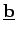 in 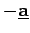 bzw. 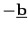 überführt, d.h., ihre Komponenten genügen der Transformationsformel (4.100b) für Tensoren 1. Stufe. Betrachtet man dagegen das Vektorprodukt 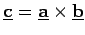 als Beispiel eines axialen Vektors, dann erhält man bei Spiegelung am Koordinatenursprung 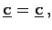 d.h. eine Verletzung der Transformationsformel (4.100a) für Tensoren 1. Stufe. Deshalb wird der axiale Vektor
und 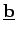 in 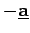 bzw. 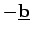 überführt, d.h., ihre Komponenten genügen der Transformationsformel (4.100b) für Tensoren 1. Stufe. Betrachtet man dagegen das Vektorprodukt 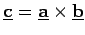 als Beispiel eines axialen Vektors, dann erhält man bei Spiegelung am Koordinatenursprung 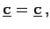 d.h. eine Verletzung der Transformationsformel (4.100a) für Tensoren 1. Stufe. Deshalb wird der axiale Vektor  als Pseudovektor oder allgemein als Pseudotensor bezeichnet.
als Pseudovektor oder allgemein als Pseudotensor bezeichnet.
| Beispiel |
|
Die Vektorprodukte 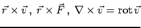 mit dem Ortsvektor 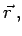 dem Geschwindigkeitsvektor 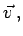 dem Kraftvektor 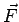 und dem Nablaoperator 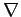 sind Beispiele für axiale Vektoren, die das ,,falsche`` Spiegelungsverhalten besitzen. |